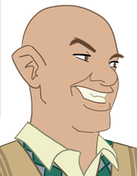
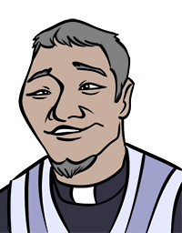
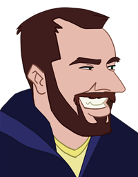
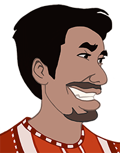
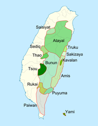

-

Chris Clark
CEOChris lives in mountains of northern Taiwan. He is working with the elders of the Tayal and Truku tribes to transform their ancients tales into Qalang’s video games and comics.
-

Atung Yapas
ExpertPastor Atung Bio
-

Owen Welsh
Art DirectorOwen became fascinated with traditional animation as a boy. The characters, stories, designs and colors inspired him the way dreams do. Owen enjoys using traditional and digital media to create art and animation for Qalang.
-
Erich Clark
Sound EngineerErich has been a soundguy for 20 years and went to college for writing. In his spare time, he plays video games and volunteers with his church youth group. Erich mixes sound effects, designs friendly Halus levels, and makes websites for Qalang.
-

Edward Cheung
CTOEdward hails from the sunny hills of the Bay Area, but has also lived in China, Hong Kong and Taiwan. He's had a lifelong love of great books, movies, and games, plus years of software engineering training. When he's not making games in Unity, he's trail running or jet-setting to adventures abroad to keep his Mandarin sharp.
-
Analissa Fazio
Concept ArtistAnalissa is an artist and musician, inspired by paintings, comics, films, and games. She recently studied Visual Development and Game Design at Academy of Art in SF. Between the hours drawing for Qalang, she will most likely be playing piano, working on personal creative projects, or out exploring the city.
-

About Taiwan
Halus is a folk tale of the Tayal, Truku and Seediq tribes of northern Taiwan. They are three of the 16 officially recognized aboriginal ethnicities of Taiwan. They were once known for their facial tattoos, fierceness in battle and skilled weaving. The aborigines of Taiwan have lived in Taiwan for more than five thousand years. Chinese settlers began to arrive in the 17th century.
-
About Qalang
Qalang is creating video games and comics inspired by the indiginous tribes of Taiwan.